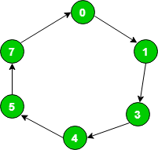
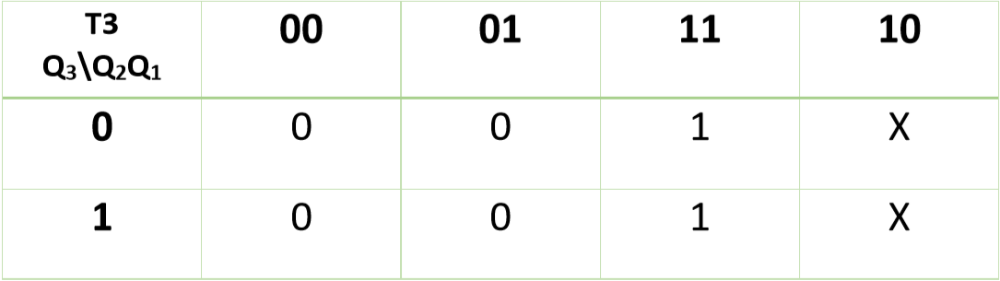
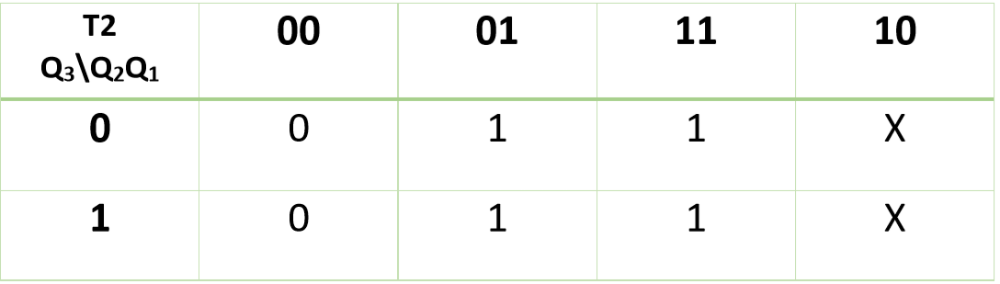
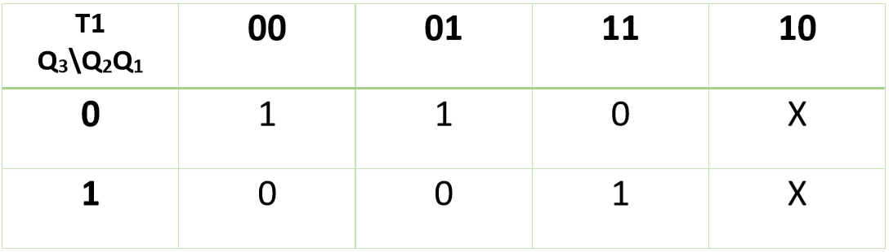
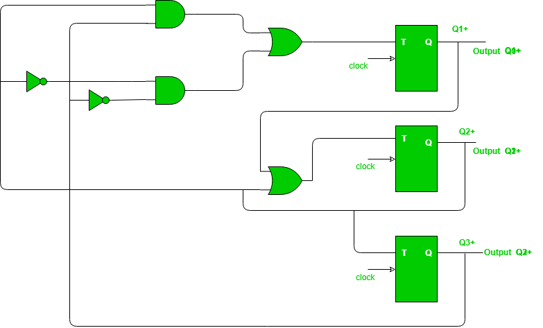

Prerequisite – Counters
Problem – Design synchronous counter for sequence: 0 → 1 → 3 → 4 → 5 → 7 → 0, using T flip-flop.
Explanation – For given sequence, state transition diagram as following below:

State transition table logic:
| Present State | Next State |
|---|---|
| 0 | 1 |
| 1 | 3 |
| 3 | 4 |
| 4 | 5 |
| 5 | 7 |
| 7 | 0 |
State transition table for given sequence:
| Present State | Next State | ||||
|---|---|---|---|---|---|
| Q3 | Q2 | Q1 | Q3(t+1) | Q2(t+1) | Q1(t+1) |
| 0 | 0 | 0 | 0 | 0 | 1 |
| 0 | 0 | 1 | 0 | 1 | 1 |
| 0 | 1 | 1 | 1 | 0 | 0 |
| 1 | 0 | 0 | 1 | 0 | 1 |
| 1 | 0 | 1 | 1 | 1 | 1 |
| 1 | 1 | 1 | 0 | 0 | 0 |
T flip-flop – If value of Q changes either from 0 to 1 or from 1 to 0 then input for T flip-flop is 1 else input value is 0.
| Qt | Qt+1 | T |
|---|---|---|
| 0 | 0 | 0 |
| 0 | 1 | 1 |
| 1 | 0 | 1 |
| 1 | 1 | 0 |
Draw input table of all T flip-flops by using the excitation table of T flip-flop. As nature of T flip-flop is toggle in nature. Here, Q3 as Most significant bit and Q1 as least significant bit.
| Input table of Flip-Flops | |||
|---|---|---|---|
| T3 | T2 | T1 | |
| 0 | 0 | 1 | |
| 0 | 1 | 1 | |
| 1 | 1 | 0 | |
| 0 | 0 | 0 | |
| 0 | 1 | 0 | |
| 1 | 1 | 1 | |
Find value of T3, T2, T1 in terms of Q3, Q2, Q1 using K-Map (Karnaugh Map):

Therefore,
T3 = Q2

Therefore,
T2 = Q1 + Q2

Therefore,
T1 = Q3’Q2’ + Q3Q2
Now, you can design required circuit using expressions of K-maps:
